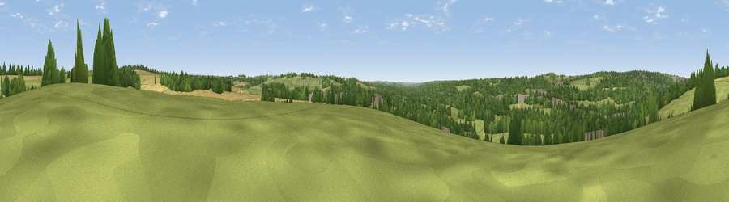

Viewpoint near Shawford
#39387 in England · top 57% of its area beats it · near ShawfordWhere it is
The exact computed spot (SU 48475 26225). Click the marker for map links.
The view, rendered

A 360° render of this exact spot computed from the terrain model, tree cover and land cover — summer colours, afternoon light, calibrated against photographs of famous viewpoints. Real trees, hedges and buildings will differ in detail.
The panorama
Grey silhouette: terrain skyline in each direction (720 bearings, Earth curvature and refraction included). Dashed green: skyline with trees (+15 m) and buildings (+8 m) as obstacles. Blue strip: how far the ground is visible on each bearing.
Where the view opens
Wedge length = distance to the farthest visible ground on that bearing (vegetation-aware). Rings at 10, 25 and 50 km.
What fills the view
46% grassland · 33% woodland · 15% cropland · 6% built-up
Angular shares of the visible panorama (visual magnitude), not map area. Landscape diversity 0.51 (0–1 Shannon).
Key numbers
More beautiful places nearby
The staircase of upgrades: each row has a higher view potential than everything closer. Driving times are estimates from straight-line distance, calibrated against real road routing — check an actual route before setting out.
| Place | Direction | Drive | Score |
|---|---|---|---|
| Viewpoint near Chilcomb | NE · 2 km | ~5 min | 48.4 |
| Deacon Hill | ENE · 3 km | ~6 min | 56.7 |
| Viewpoint near Chilcomb | ENE · 4 km | ~10 min | 63.3 |
| Beacon Hill | ESE · 12 km | ~23 min | 71.7 |
| Viewpoint near Meonstoke | ESE · 17 km | ~29 min | 74.8 |
| Viewpoint near Buriton | ESE · 24 km | ~39 min | 75.3 |
| Viewpoint near Buriton | ESE · 24 km | ~39 min | 80.0 |
| Beacon Hill | ESE · 33 km | ~51 min | 85.8 |
51.03335, -1.31007 · source: screening · position refined by local search. Computed location — check access rights before visiting.